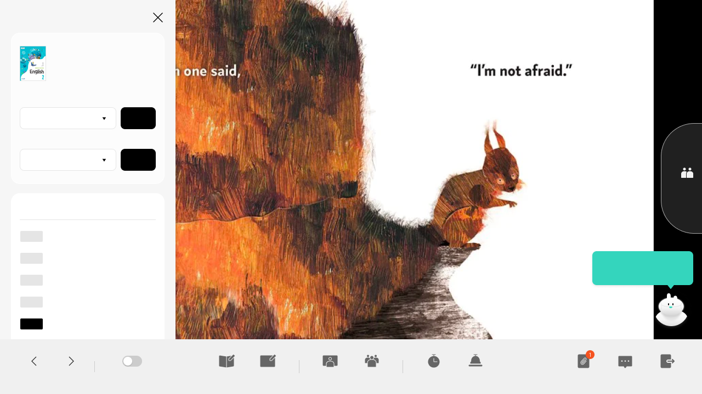
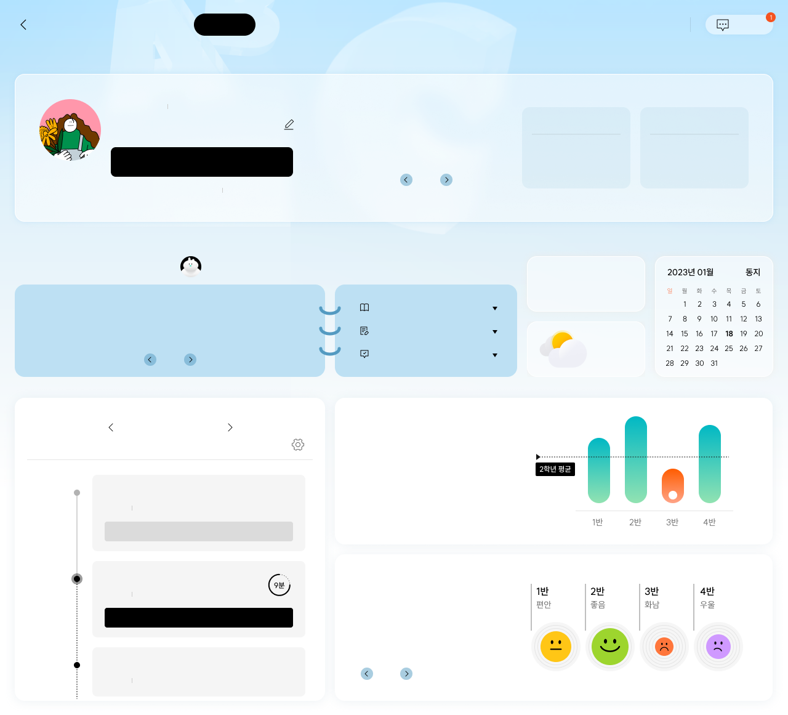
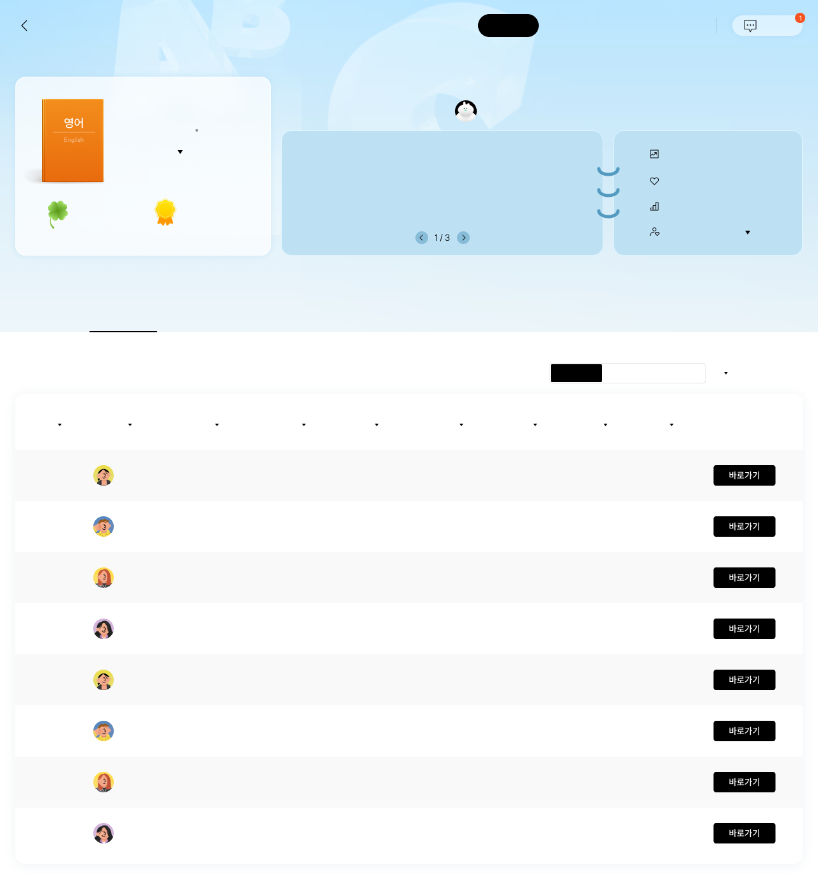

중학교 영어 2단원차시Lessen 1Listen and Spe...적용적용목차제재제재활동활동퀴즈Watch and ThinkWatch and ThinkA-1A-2Think and Play뒤로앞으로학생 화면 잠금교과서 판서칠판 판서발표자 선정조 편성타이머수업 종첨부파일소통방수업 나가기학생 목록2학년 1반 학생이 모두 수업에 참석했어요.

AI 디지털 교과서 포털교과서 홈수업설계하기수업하기평가하기대시보드과제관리게시판고객센터소통방압구정중학교영어안녕하세요. 이미래 선생님맞춤형 수업 설계하기최근작업 2023.12.21 13:41Lesson 8 9차시과제 제출 현황과제 미제출 학생을 확인해보세요.1 / 32학년 1반195제출미제출2학년 2반148제출미제출AI 보조교사의 오늘의 팁오늘은 일년 중에서 밤이 가장 길고 낮이 가장 짧은날인 동지에요. 학생들에게 동지 팥죽의 유래에 대해 이야기해 볼까요?1 / 3과제 미제출 학생미답변 게시글미확인 대화35명9명5명9:55 AM-12℃미세먼지 좋음01월 20일 수업담당 수업 시간표를 확인해보세요.1교시2교시3교시수업예정2학년 2반11차시My Dream Trip수업완료2학년 1반11차시Think Big, Start Small수업시작하기2학년 3반11차시Let's Have Fun Together학습 진도2학년 영어과목 평균 학습진도입니다.반별 감정 지수오늘의 2학년 학생들의 평균 감정지수는 좋음 입니다.1 / 2

AI 디지털 교과서 포털교과서 홈수업설계하기수업하기평가하기대시보드과제관리게시판고객센터소통방압구정중학교영어2학년 1반클로바상장254개15개AI 보조교사의 오늘의 팁2학년 1반은 소수와 관련된 문제를 풀고 있어요. 학습 정서 분석을 살펴보면, 맞힌 문제에서는 흥미를 느끼고 있는 학생이 가장 많으며, 틀린 문제가 어려워 오답이 발생하는 경우가 많았어요.학습량 추이관심 영역학습난이도관심학생증가듣기적정3명반 전체개별 학생전체월주단원/차시 선택번호이름닉네임학습시간성취도과제제출률게시글 수클로바 수상장 수교과학습 모니터링1가하나하나둘셋24시간36분98%100%1/3개22개13개2가하나하나둘셋24시간36분98%100%1/3개22개13개3가하나하나둘셋24시간36분98%100%1/3개22개13개4가하나하나둘셋24시간36분98%100%1/3개22개13개5가하나하나둘셋24시간36분98%100%1/3개22개13개6가하나하나둘셋24시간36분98%100%1/3개22개13개7가하나하나둘셋24시간36분98%100%1/3개22개13개8가하나하나둘셋24시간36분98%100%1/3개22개13개